NDK Periodikum
Prohlédněte si krátký videonávod nebo projděte podrobný postup zpracování níže.
Videonávod
Periodikum je dokument vydávaný opakovaně v samostatných částech, které spojuje společný název, průběžné číslování nebo jiné posloupnosti, jednotná grafická úprava a tematické zaměření. Tyto části vycházejí v pravidelných nebo nepravidelných intervalech, a jejich vydávání je plánováno jako dlouhodobé nebo neukončené. Typickými příklady periodik jsou noviny, časopisy nebo periodické sborníky.
V katalogových záznamech jsou periodika rozpoznatelná podle hodnoty
"s" v poli LDR/07, která označuje seriál (dokument
vydávaný průběžně).
Tato hodnota odlišuje periodika od monografií (LDR/07 = "m") a je
rozhodující pro výběr odpovídajícího modelu v rámci zpracování v
ProArcu.
Vytvoření digitálního dokumentu (objektu)
V navigační liště úložiště klikněte na Nový objekt. Otevře se dialogové okno pro vytvoření všech typů dokumentů (modelů). Níže popisujeme jednotlivé modely využívané pro zpracování periodik. Než začnete zakládat konkrétní ročníky a čísla, je nejprve potřeba založit titulovou úroveň periodika, až poté následně strukturu periodika.
NDK Periodikum
Nové NDK Periodikum
Než začnete s vytvářením nového objektu periodika, doporučujeme nejprve ověřit, zda už periodikum v systému neexistuje. Klikněte na Hledat v horní liště (Import, Správa procesů, Hledat, Nový objekt).
Pomocí Pokročilého vyhledávání můžete najít titul podle modelu (NDK Periodikum), názvu, identifikátoru (např. UUID, ISSN a dalších). Jestliže požadovaný titul nenajdete, pokračujte jeho založením.
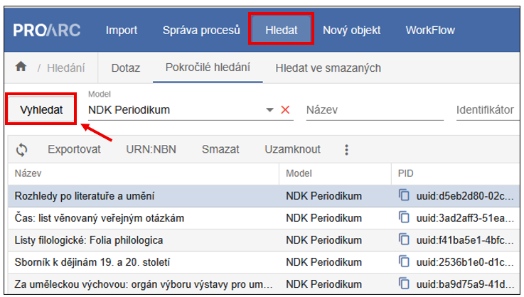
Pokud zakládáte úplně nové periodikum (v ProArcu ještě nikdy nebylo založeno), založení je následující. Jako první krok v navigační liště úložiště klikněte na možnost Nový objekt.
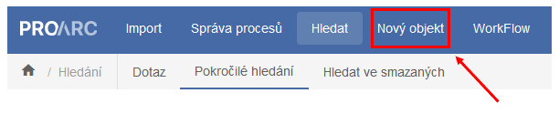
Zobrazí se dialogové okno, které slouží pro založení všech typů dokumentů (modelů). Z roletky vyberte model NDK Periodikum.
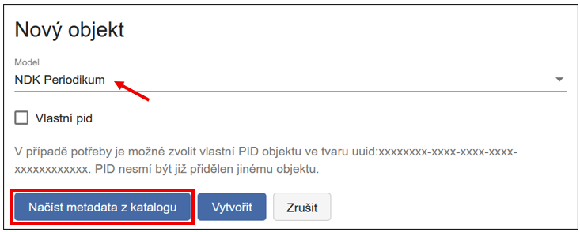
Objekt lze založit dvěma způsoby:
-
Vytvořit - otevře se prázdný formulář a metadata se vyplňují ručně (nedoporučujeme).
-
Načíst metadata z katalogu - doporučený postup. Po kliknutí na toto tlačítko se otevře další dialog, kde zvolíte katalog, typ hledaného údaje (např. název, pole 001, ISSN, čárový kód) a konkrétní dotaz.
Tip
Periodikum hledejte podle pole 001 nebo sysno, dostanete nejrelevantnější výsledek.

Kliknutím na Vyhledat se zobrazí výsledky. Vlevo se zobrazí seznam nalezených titulů (názvy periodik). Vpravo se zobrazí doplňující informace - katalogový záznam ve formátu MARC21. Řádek, který je zašedlý (vlevo, v seznamu periodik), označuje záznam, který bude po potvrzení stažený do formuláře. Záznam vyberete kliknutím na Vytvořit, čímž se metadata přenesou do formuláře a připraví k editaci.

Systém ProArc kontroluje povinná pole. Pokud není některé pole označené jako M (Mandatory) vyplněno, zobrazí se červeně. Při zakládání titulové úrovně jde nejčastěji o chybějící signaturu - Uložení.
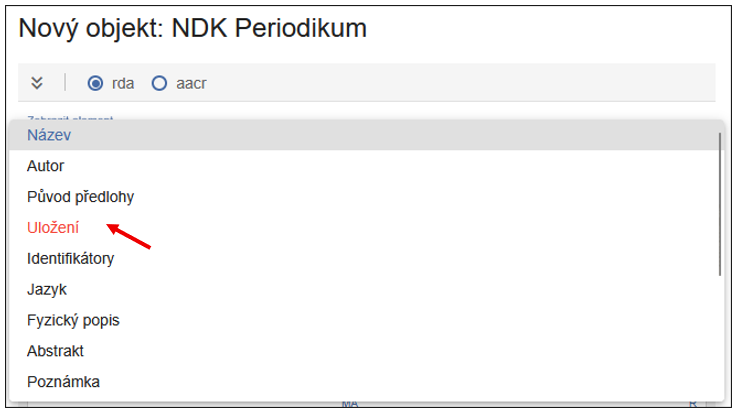
Pokud chcete metadata doplňovat a upravovat až později, klikněte na Uložit. Zobrazí se vám sice tato hláška o nevalidních datech, ale objekt se i přes chybějící údaje uloží a vytvoří:
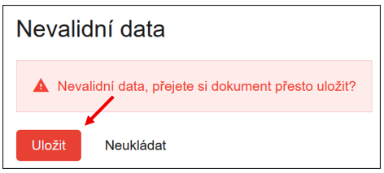
Metadata se tímto způsobem automaticky přenesou do formuláře. Objekt vytvoříte kliknutím na Vytvořit a přejít do objektu nebo jen Vytvořit (objekt se uloží, ale musíte ho cíleně najít přes hlavní obrazovku, v úložišti).
Zvolíte-li variantu Vytvořit, nově vytvořené periodikum najdete z hlavní obrazovky (Hledat 🡪 Pokročilé vyhledávání nebo Dotaz, specifikujte model NDK Periodikum). Dvojklikem na název periodika se dostanete do editačního rozhraní.
Po uložení (Vytvořit a přejít do objektu) se dostanete do editačního rozhraní, kde můžete pracovat s metadaty titulové úrovně. Červená ikona vás opět upozorňuje na chybně vyplněná metadata:
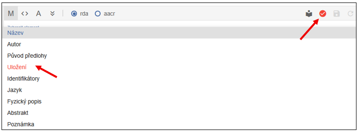
Tip
K vyplňování metadat využijte Pravidla pro popis periodik.
Uspořádání podoken v editaci je variabilní a lze jej kdykoli upravit pomocí ikony vpravo na liště.
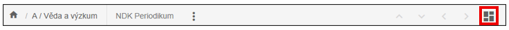
Tip na rozložení obrazovky
Tabulka (případně Strom), Popisná metadata Obrázek.

NDK Periodikum s existujícím uuid
Druhá možnost vytvoření objektu titulové úrovně nastává v situaci, kdy byl původní titul už smazán (např. po archivaci a zálohování), ale stále existuje v digitální knihovně. V tomto případě lze vytvořit nový objekt s již existujícím UUID.
V horní liště klikněte na Nový objekt, z roletky vyberte model NDK Periodikum. Zaškrtněte možnost Vlastní PID. Dialogové okno se rozšíří o jeden řádek (PID), kam můžete vložit již existující UUID (např. z digitální knihovny) ve tvaru uuid:... PID nesmí být přidělen jinému objektu v instanci. Díky tomuto kroku se vám nově zakládané ročníky a čísla propojí s existujícím periodikem v DK (Kramerius).
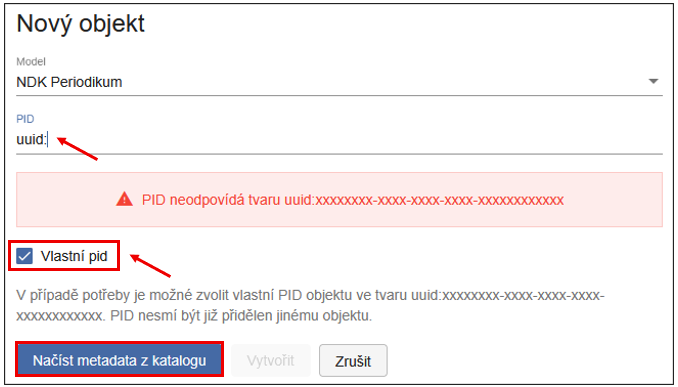
Dále pokračujete stejným způsobem jako u nového objektu založeného bez existujícího UUID (PID) - načtením metadat z katalogu a úpravou formuláře, stažením a případnou ruční úpravou (např. doplnění signatury).
NDK Ročník
Ročník zakládáme nejlépe z editačního prostředí NDK Periodika, a to pomocí ikony Plus.
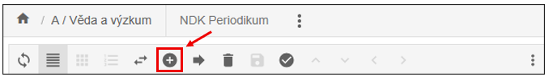
Po kliknutí na Plus přidáte nový objekt (ročník). Při zakládání můžete zvolit, zda se má přidat Na konec, nebo Za vybraný ročník (ten je aktuálně podbarvený).
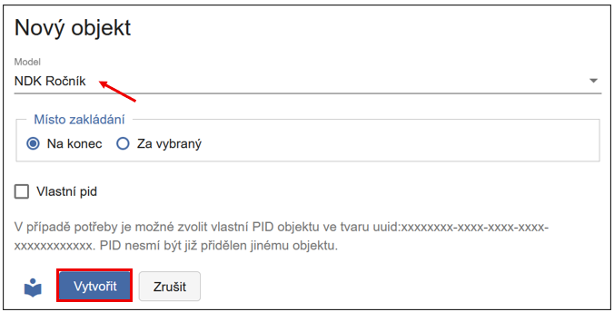
Tip na rozložení
Tabulka nebo Strom (případně kombinace) s Popisnými metadaty a doplňkově i Obrázek.
Nejdůležitějšími poli jsou: Číslo části (titleInfo/partNumber) a Datum vydání (originInfo/dateIssued). Ostatní metadata (např. žánr s hodnotou volume nebo UUID) se vyplní automaticky.
Další ročník přidáte opět ikonou Plus. Místo zakládání lze zvolit dvojí - buďto Na konec nebo Za vybraný. Vybraný je ten ročník, který je podbarvený:
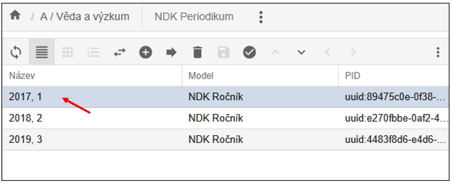
Pokud ročník založíte na nesprávném místě, lze ho přesunout, máte dvě možnosti:
- Přetažením myší - přetáhněte objekt na požadovanou pozici. Po přesunutí obrazovka zešedne - pro její opětovné zaktivnění klikněte na ikonu diskety (Uložit).
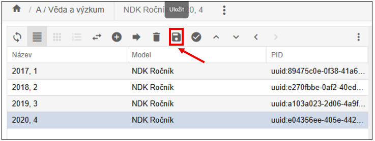
- Nebo s využitím funkce Změna pozice - najdete ji v nabídce pod třemi tečkami.
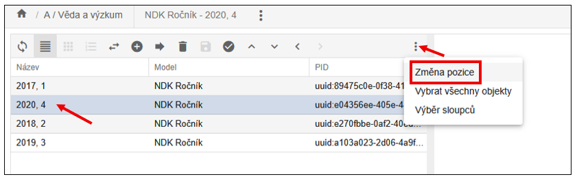
V případě, že se rozhodnote použít funkci změny pozice, po jejím zvolení se zobrazí dialog, kde do pole Pozice zadáte číslo určující pozici, kam se má objekt přesunout (v ukázce v rozmezí 1-4, protože máme založeny 4 ročníky) a potvrdit kliknutím na Přesunout.
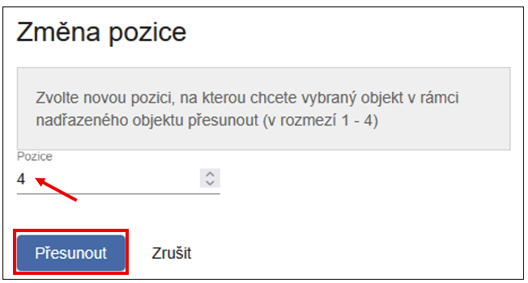
Ročník se přesune na vámi vybrané místo. Jakmile obrazovka zašedne, je potřeba ještě změnu uložit ikonou diskety. Obnovit zobrazení lze ikonou obousměrných šipek, obrazovky se poté znovu zaktivní a lze pokračovat v práci.
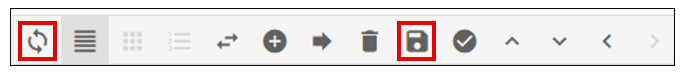
NDK Číslo
Číslo se zakládá stejným způsobem jako ročník - kliknutím na ikonu Plus. Je však důležité, aby bylo založeno uvnitř správného ročníku.
K orientaci v hierarchii slouží: drobečková navigace a zobrazení Stromu/Tabulky.
Drobečková navigace - ukazuje, kde se právě nacházíte, a umožňuje snadné přepínání/proklik mezi jednotlivými úrovněmi (např. periodikum → ročník → číslo).
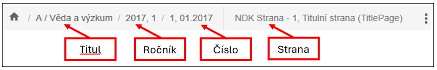
Zobrazení Tabulky, či ještě lépe Stromu také poskytuje přehled celkové struktury periodika:
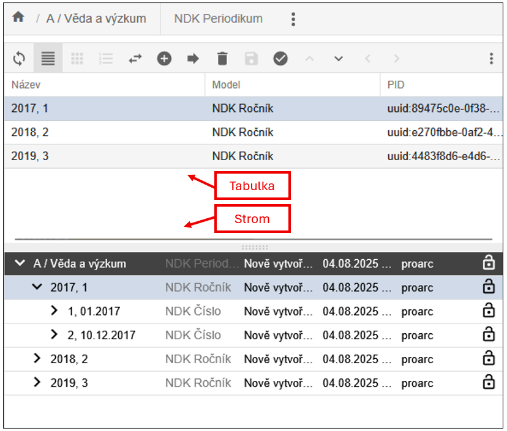
Pokud se nenacházíte na úrovni ročníku, můžete se do něj dostat dvojklikem na jeho název. Poté lze založit nové číslo pomocí ikony Plus.
Pro rychlý přesun mezi objekty využijte šipky:
↑ (na nadřazený objekt), ↓ (na podřazený objekt), ← (na předchozí objekt), → (na následující objekt).
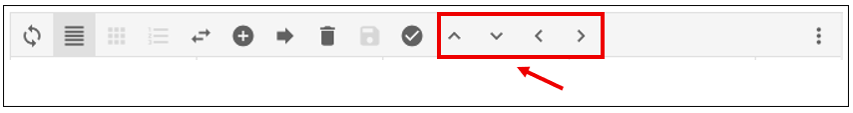
Načtení dat
Každý uživatel má v ProArcu přiřazeny pracovní adresáře. O jejich namapování informuje uživatele systémový administrátor.
Do adresáře určeného pro import připravte: skeny ve formátu TIFF, k nim odpovídající OCR soubory ve formátu TXT a ALTO soubory ve formátu XML.
Upozornění
Pro NDK modely není možné importovat TIFF soubory bez odpovídajících OCR a ALTO souborů.
Pro zahájení importu klikněte v levé části navigační lišty ProArcu na tlačítko Import. Tím přejdete do importního rozhraní.
V importním rozhraní vyberte adresář s daty dokumentu, který chcete zpracovat.
V poli Profil načítání zvolte profil podle typu modelu. Pro textové dokumenty v NDK modelech použijte profil Default.
Priorita je ve výchozím stavu nastavena na Střední. Zvolíte-li vyšší prioritu, bude se dávka ve frontě zpracovávat dříve než ostatní. Jinak se zařadí na konec fronty.
V poli Zařízení vyberte přístroj (skener), na kterém byla data připravena. Výběr zařízení je pro většinu modelů povinný. Tlačítko Načíst se aktivuje až po jeho zvolení.

Funkce Generovat index stránek je ve výchozím stavu zapnutá. Zajišťuje automatické přiřazení indexů stránkám již během načítání.
Ikona  slouží k opětovnému načtení
dávky. Při novém načtení ProArc automaticky smaže pomocné soubory, které
při předchozím importu vytvořil.
slouží k opětovnému načtení
dávky. Při novém načtení ProArc automaticky smaže pomocné soubory, které
při předchozím importu vytvořil.
Lze také vybrat více dávek najednou - dávky se zařadí do fronty a zpracují se postupně. Po spuštění načítání se v případě jedné dávky zobrazí dialogové okno s průběhem importu. Toto okno můžete Zavřít - načítání bude i nadále probíhat na pozadí.

Aktuální stav importu můžete sledovat ve Správě importních procesů. V případě souběžného spuštění více dávek budete automaticky přesměrováni do Správy importních procesů. Zde klikněte na možnost Zobrazit frontu načítání.

V tabulkovém zobrazení uvidíte průběh importu jednotlivých dávek.
Aktuální stav lze ručně aktualizovat pomocí tlačítka Obnovit.

Jakmile je načítání dokončeno, daný proces zmizí z aktuálního
zobrazení.
Je proto nutné kliknout na možnost Zpět na seznam všech procesů.
V přehledu procesů označte dokončenou dávku, čímž se v horní liště zpřístupní tlačítka:
-
Načíst znovu - pro opětovný import dávky,
-
Pokračovat - pro zahájení dalšího zpracování.

Popis obrazových dat (paginace)
Po kliknutí na tlačítko Pokračovat se načtená dávka otevře v okně Správa dávek - editace.
Rozhraní je rozděleno na více podoken, která si můžete libovolně
uspořádat podle svých potřeb pomocí ikony pro změnu rozložení zobrazení  (vpravo nahoře).
(vpravo nahoře).
Každé podokno má v horní liště vlastní sadu funkcí. Při najetí myší na jednotlivé ikony se zobrazí jejich popis. Výběr sloupců lze přizpůsobit v horní liště pod ikonou tří teček (Více), případně v nastavení v sekci Profil.
Rozložení je individuální - každému může vyhovovat něco jiného.
Tip
Doporučujeme minimálně zobrazit následující podokna: Náhledy, Tabulka nebo Strom, Popisná metadata a Obrázek.
Na ukázce níže jsou zobrazena podokna: Náhledy, Popisná metadata a Obrázek:
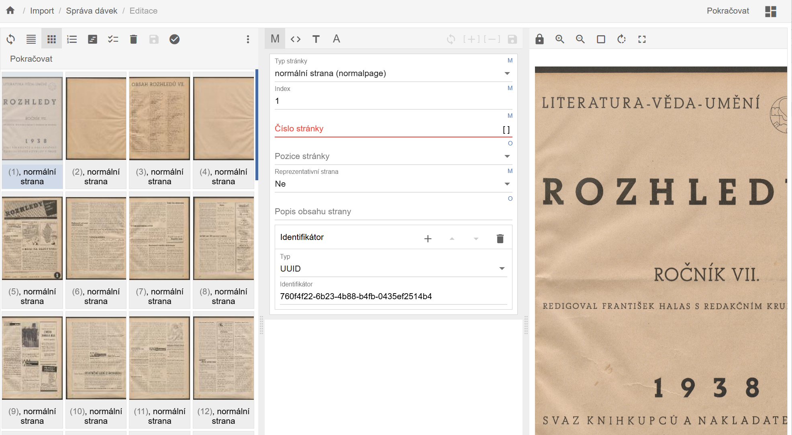
V případě, že máte čísla svázaná dohromady do jednoho svazku, je dobré si načíst celý svazek, ten očíslovat, opaginovat, doporučujeme také popsat typ strany Titulní strana (titlepage), pro snadnější orientaci při rozřazování do čísel, a všechny popsané skeny nejlépe uložit do prvního čísla.
Pokud změníte popis u konkrétní strany, změna se uloží po stisknutí klávesy ENTER. Kurzor se poté automaticky přesune na další stranu.
Pro hromadné označení více stran použijte myš nebo klávesy SHIFT/CTRL. Nastavte parametry popisu ve formuláři a změny potvrďte klávesou ENTER nebo kliknutím na ikonu diskety:
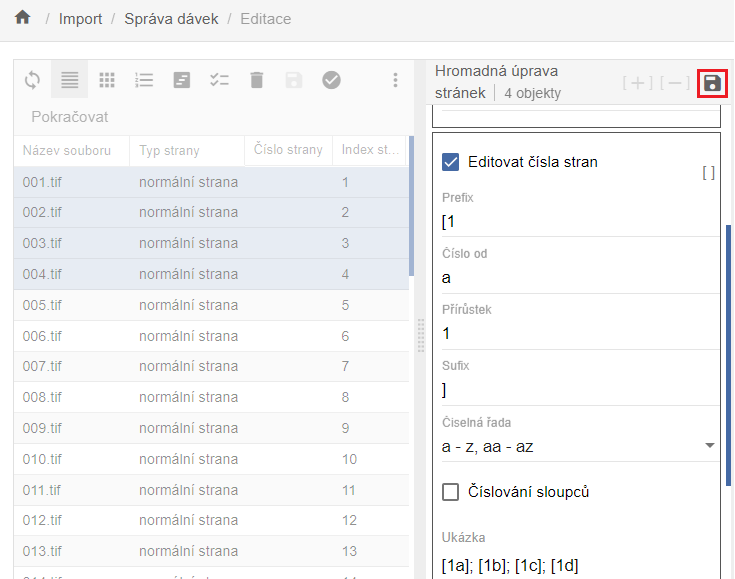
Jakmile jsou všechny strany popsány povinným elementem (např. číslem strany), klikněte na tlačítko Pokračovat. Systém provede validaci záznamů.
Pokud některé strany chybí nebo obsahují chybu, zobrazí se upozornění a problémové strany budou červeně zvýrazněny pro snadnější identifikaci.
Po úspěšné validaci se otevře okno pro výběr nadřazeného objektu, tedy titulu, k němuž patří právě popsané a importované strany.
Úprava (editace) dokumentu
Zobrazení v editoru je stejné, jako v případě nově založeného objektu. Navíc zde vidíme i seznam přiřazených stran a jejich náhledy. Metadata lze upravovat jak pro jednotlivé strany, tak i na úrovni titulu, ročníku a čísla - a to jak pomocí formuláře, tak přímo v XML zobrazení.
Upozornění
Změníte-li údaje u titulové úrovně periodika po vytvoření ročníků a čísel, metadata se nepropíšou do již hotových objektů (ročníků, čísel).
Při každé provedené změně se aktivuje jinak zašedlá ikona diskety - změnu je nutné Uložit (symbol diskety).
Každé podokno má na horní liště vlastní sadu funkcí. Po najetí kurzorem na ikonu se zobrazí její popis. Méně často používané funkce jsou skryté pod ikonou tří teček.

Podokno se zobrazenými stranami (ve formě tabulky nebo náhledů) umožňuje jednotlivé strany nebo více vybraných stran přesouvat na nové pozice v rámci dokumentu - buď přetažením myší, nebo přes funkci Změnit pozici.
Nacházíte-li se v úrovni podřízených objektů (např. strany), můžete se vrátit na nadřazenou úroveň kliknutím na odkaz s názvem v horní navigační liště (proklik je možný na titul, ročník i číslo):
Případně šipkou nahoru (Přejít na nadřazený objekt):
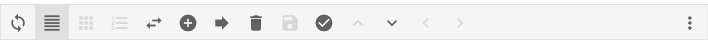
Pokud byla všechna čísla naskenována do jednoho souboru (např. kvůli svázání v rámci ročníku), je třeba jednotlivé skeny přesunout ke správnému číslu nebo ročníku. Postup přesunu je následující:
-
V úložišti vyhledejte titul, ke kterému jsou skeny připojeny.
-
Otevřete editační okno objektu.
-
Ve struktuře klikněte na první číslo, v němž jsou skeny uložené.
-
V levé části označte skeny určené k přesunu (po výběru budou podbarvené).
-
Klikněte na ikonu šipky doprava (ikona pro přesun).
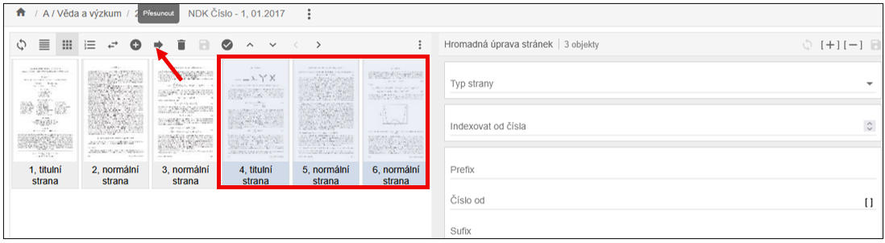
Poté:
- Vyhledejte a vyberte cíl přesunu.
Tip
Pro zúžení seznamu vyberte příslušný model a doplňte například část názvu titulu.
-
Podbarvené skeny zkontrolujte (podbarvené se budou přesunovat).
-
Klikněte na Přesunout. V pravé horní části okna označte požadovaný cílový objekt (klikněte na název periodika - podbarví se, ročník - rozbalí se, a vyberte cílové číslo - zvýrazní se podbarvením). Nad tlačítkem Přesunout se zobrazuje informace o cílovém objektu (Přesunout objekty do).
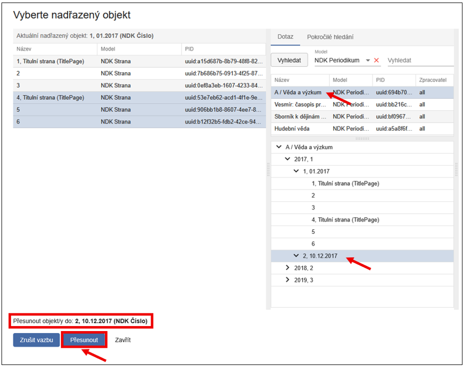
Po kliknutí na Přesunout se zobrazí potvrzovací dialog „Přesun objektů - Opravdu chcete přesunout vybrané objekty do nově zvoleného objektu?" Potvrďte kliknutím na Ano.
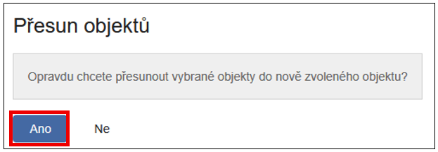
Skeny se tímto přesunou do správné úrovně (např. konkrétní číslo). Po přesunu to vypadá takto:
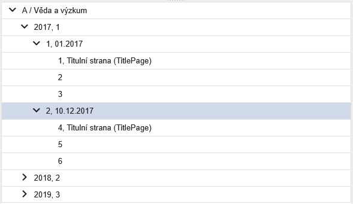
Upozornění
Přesun objektů není omezen pouze na nejnižší úroveň (např. jednotlivé stránky/skeny). Přesouvat lze také celé výtisky nebo ročníky. Dbejte proto zvýšené opatrnosti a vždy si pečlivě zkontrolujte, jaký objekt přesouváte a kam ho umísťujete.
Tímto způsobem skeny rozřadíte do jednotlivých (předem založených) čísel. Po rozřazení a přesunutí všech skenů do jednotlivých čísel je ještě potřeba každé číslo zreindexovat pomocí Reindexovat na horní liště:
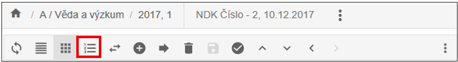
Po kliknutí na tlačítko se zobrazí dialog, ve kterém stačí potvrdit akci kliknutím na Ano - tím potvrdíte, že chcete reindexovat všechny strany daného čísla.
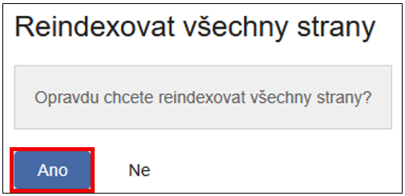
Přidělení URN:NBN
Přidělování URN:NBN závisí na zvoleném způsobu zpracování.
Pokud zpracováváte celé ročníky, URN:NBN přidělujete na úrovni ročníku. V případě postupného zpracování po jednotlivých číslech, přidělujte URN:NBN každému číslu samostatně.
Funkce přidělení URN:NBN je dostupná buď přímo z editačního rozhraní objektu (pod ikonou tří teček),
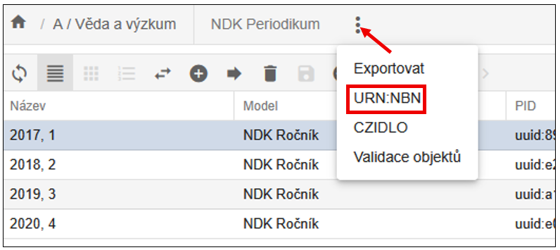
nebo ze základního okna úložiště klinknutím na tlačítko URN:NBN. Objekt, který se bude exportovat je vždy podbarvený (v ukázce výtisk 1/2017):
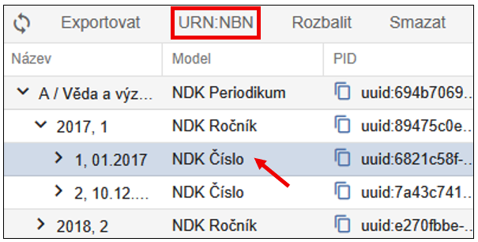
Po stisknutí tlačítka se zobrazí dialogové okno, ve kterém vyberte v roletce registrátora. Nejčastěji bude k dispozici jeden, ale můžete jich mít více, výběr závisí na konfiguraci systému.
Po úspěšné registraci dostanete zpětnou vazbu od Resolveru a identifikátor je automaticky zapsáno do metadat jako platný.
Export dokumentu
ProArc podporuje řadu exportních formátů a umožňuje i napojení na externí systémy - např. digitální knihovny nebo repozitáře.
Není však nutné mít v rozhraní dostupné všechny formáty.
Tip
Doporučujeme nabídku omezit konfigurací konkrétní instance pouze na ty formáty, které daná instituce skutečně využívá.
Funkce Export je dostupná v editoru objektu v úložišti pod ikonou tří teček, a také v základním okně úložiště.
K importům do digitální knihovny Kramerius (s využitím image serveru), předávání dat do Národní digitální knihovny (např. v rámci projektu VISK), případně k replikaci dat mezi knihovnami slouží primárně NDK PSP balíček.
Export NDK PSP lze provést do lokálního exportního adresáře, nebo přímo do napojené instance Krameria, pokud je tato možnost nakonfigurována.
Cílové umístění exportu zvolte v dialogovém okně pomocí roletky.
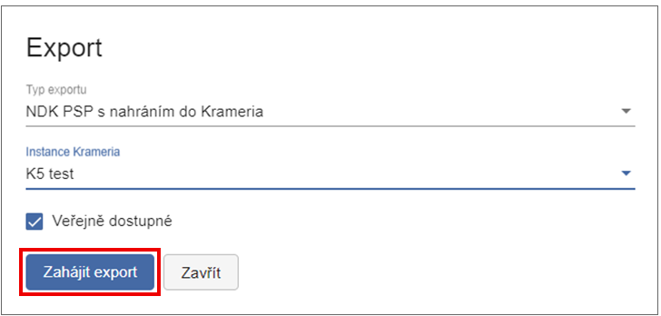